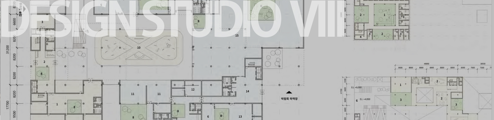

Design Studio
설계스튜디오
건축설계스튜디오1 Architectural Design Studio I
2학년 설계과정에서는 각 학기 2가지의 설계주제를 7-8주 과정으로 수행, 총 4개의 프로젝트를 수행한다. 건축설계스튜디오1의 수업목표는 우선 머릿속 공간적 상상력을 외부로 표현하는 능력을 기르는데 있다. 따라서 설계를 시작하는 학생들임을 고려 설계주제는 공간 상상력을 최대로 끌어낼 수 있는 주제로 선정한다.
본 학기의 첫 과제는 ‘오 마이 하우스’이다. 단독주거(single family residence)로 지금껏 개인이 꿈꾸어 왔던 공간 및 조형을 디자인한다. 주거기능은 물론 자신의 취미 및 직업 등 자유로운 상상력에 근거하여 기능을 배치할 수 있다. 단, 가로, 세로, 높이 6m x 6m x 6m라는 제한된 범위에서 공간을 입체적으로 구성하는데 이는 공간의 입체적 조합을 유도하기 위함이다. 모델구성을 통한 확인과 도면표현을 최대한 반복적으로 작업하도록 하고 중간과정은 매주 제출한다. 투상도를 포함한 모든 도면은 수작업으로 작성하며 치수 등 도면으로서의 엄밀한 표현을 위해 첫 번째 과제에서의 색채사용은 제한한다.
두 번째 디자인 과제는 ‘웰컴 투 부산’이다. 관광안내소(Tourist Informaiton Center)의 기능 및 인지성-개방성-상징성 등 디자인 요소에 관한 내용을 사전 조사하고 분석하여 디자인에 반영한다. 또한 입지분석을 통해 건물의 배치 및 볼륨을 분석해 낸다. 재료의 물성 및 외피의 디자인의 건축물에서 가지는 의미를 이해하고 디자인에 반영한다. 첫 번째 과제에 마찬가지로 도면 및 건축물의 이미지 표현은 수작업으로 제한하며 색채 및 기타 재료를 사용하여 물성을 표현할 수 있다.
In the second-grade design course, two design topics for each semester will be carried out in 7~8 weeks, with a total of four projects. The goal of architectural design studio 1 is to develop the ability to express the spatial imagination of the head to the outside world.
The first assignment of this semester is 'Oh My House'. It is a single family residential area that designs spaces and sculptures that individuals have dreamed of so far. Functions may be arranged based on free imagination, such as one's hobby and occupation, as well as housing functions. However, space is constructed three-dimensional in a limited range of 6m x 6m x 6m in height, in order to induce a three-dimensional combination of space. Confirmation and drawing representation through model construction are required to be worked as repeatedly as possible, and the interim process is submitted weekly. All drawings, including all plans and perspective images, are manually prepared and the use of colors in the first task is limited for the strict representation of drawings.
The second design task is 'Welcome to Busan'. Information on the functions of the Tourist Informaiton Center and design elements such as cognition, openness, and symbolism are investigated, analyzed, and reflected in the design. Location analysis also analyzes the layout and volume of buildings. It understands the material properties of materials and the meaning of the design of the outer skin in the building and reflects them in the design. Similarly to the first task, image representation of drawings and buildings is manually restricted.
건축설계스튜디오2 Architectural Design Studio II
본 설계스튜디오는 스튜디오별 수업운영과 전체 연습과제로 이루어진다. 과제1과 과제2의 주과제가 각각 4주/12주간 진행된다.
PROJECT-①: 역사적 건축작품 선례, 개념의 표현과 구법 이해/ Historical architectural precedents, expression of concepts and understanding of Structural design
역사적 건축물 분석, 이해, 개념의 표현 방법, 구조 방식(뼈대) 해부, 선례 건축 작품을 이해하고, 선례를 바탕으로 연장선에서 개념 변형에 따른 본인의 건축적 표현 전개 능력 제고
PROJECT-②: 지역 커뮤니티형 어린이 도서관/ Regional Community-type children's library : 어린이 행태, 심리, 동작, 어린이도서관 기능 이해, 영역성, 지역 커뮤니티 거점시설 계획 능력 향상
건축규모: 연면적 1,000~1,200㎡, 지하 1층 + 지상 최대 4층 이하
계획 부지: 금정구 부산대학로 10, 부곡동 대우 아파트 부곡 유치원 부지 일부(1,000㎡ 내외)
PROJECT-①: Historical architectural precedents, expression of concepts and understanding of Structural design
Analyze and understand historical buildings, how to express concepts, anatomy of structures (framework), and understand precedent architectural works. Improving the ability to develop architectural expressions of the person based on historical precedent through conceptual transformation
PROJECT-②: Regional Community-type children's library:
Children's behavior, psychology, movement, understanding of children's library functions, territoriality, improvement of local community base facility planning ability
Construction scale: Total floor area 1,000~1,200㎡, 1 basement level + 4 floors above ground
Planned site: Part of the site of Bugok Kindergarten, Daewoo Apartment, Bugok-dong, 10 Busan Daehak-ro, Geumjeong-gu (around 1,000㎡)
건축설계스튜디오3 Architectural Design Studio III
건축설계스튜디오III은, 7주과정의 리노베이션 과제와 8주 과정의 주민 커뮤니티센타의 신축설계과제의 두개 과정으로 구성된다.
1,2과제는 학기 초에 모두 설명될 것이며 두 개의 과제를 복합적으로 사고하여 1과제는 중간결과물로, 2과제는 기말결과물로 제출한다.
The Studio will be divided in two parts : Project 1 - Residence Adaptive Reuse, Project 2 - Community Facility
The Studio will provide a platform for research and exploring architectural design methods at various scales and complexities. The class will foster an open-ended workshop environment in which students with different levels of skills and design knowledge could approach the design problem at a level appropriate for each student while encouraging Independent exploration based on research and experimentation.
건축설계스튜디오4 Architectural Design Studio IV
도시적 맥락 속에서 대지의 특성을 이해하고 다중이 이용하는 복합용도 시설들을 구성하여 건축물로 계획하는 설계 과정을 경험하고 필요한 역량을 배양한다. 전체 건축프로그램을 제시해 형태화시키는 과정에서 각자의 도시와 건축에 대한 관점과 디자인 방법으로 공간의 연출과 전개, 주변 맥락에서 적용될 수 있는 관계들의 재구성 등 다양한 공간적인 연출을 통해 창의적인 건축설계 안을 제시한다. 최종적으로는 제시하는 설계안에 대한 설명과 기초적인 수준의 구조, 재료, 시공 등 기술적인 해결이 포함된 도서를 작성하고 모형을 제작한다.
In this design studio course for 3rd Year undergraduate students, the Studio will challenge students to synthesize various design criteria, including but not limited to : Analysis and Programing, Site Preparation, Barrier Free Design, Adaptive Re-use.
The Studio will provide a platform for research and exploring architectural design methods at various scales and complexities. The class will foster an open-ended workshop environment in which students with different levels of skills and design knowledge could approach the design problem at a level appropriate for each student while encouraging Independent exploration based on research and experimentation.
건축설계스튜디오5 Architectural Design Studio V
설계자가 미래사회 변화 설정(팬데믹 상황, 1인 가구 증가 등)하고 사회 및 경제공동체를 위한 복합공간 제안(시나리오 제안 및 사업성 분석 포함)하는 주제로서 주요 용도는 복합문화 공동체시설이며 장소는 대학로 또는 번화가에 위치한다.
Studio Methodology
프로그램은 문화시설(공연장, 소극장, 전시시설: 600㎡), 창업센터, 청년임대주택(10가구 이내, 쉐어 하우스형이나 단독형), 주차장, 수익시설 등을 포함하며 기타 기능도 제안할 수 있다.
수업은 관련 인문학 서적 등을 읽고 유사한 건축적 사례 이미지를 발표하는 주제 토론으로 진행되며 아래와 같은 키워드들을 반영한다.
1. 도시마을-사회경제 공동체, 일상과 축제, 야성과 문화, 횡단과 경계, 신화와 기억, 놀이와 일터, 개별과 전체, 융합과 혼종, text-con-text, 혁신과 진화
2 기타: 구조 및 구법도면, 외부공간 디자인(광장, 공공조형물, 공공디자인 등), 친환경 계획, 재난안전 계획, 동선계획도, 사업성 분석, 장애인 배려 계획도 등 포함
The design studio will focus on the three designated SPCs for the semester: 1. Site Planning, 2. LIfe Saftey and Egress, 3. Architecture and Urban Design
The Studio will provide a platform for research and exploring architectural design methods at various scales and complexities. The class will foster an open-ended workshop environment in which students with different levels of skills and design knowledge could approach the design problem at a level appropriate for each student while encouraging Independent exploration based on research and experimentation.
건축설계스튜디오6 Architectural Design Studio VI
설계자가 미래사회 변화 설정(팬데믹 상황, 1인 가구 증가 등)하고 사회 및 경제공동체를 위한 복합공간 제안(시나리오 제안 및 사업성 분석 포함)하는 주제로서 주요 용도는 복합문화 공동체시설이며 장소는 대학로 또는 번화가에 위치한다.
The Studio will provide a platform for research and exploring architectural design methods at various scales and complexities. The class will foster an open-ended workshop environment in which students with different levels of skills and design knowledge could approach the design problem at a level appropriate for each student while encouraging Independent exploration based on research and experimentation.
Studio Methodology
프로그램은 문화시설(공연장, 소극장, 전시시설: 600㎡), 창업센터, 청년임대주택(10가구 이내, 쉐어 하우스형이나 단독형), 주차장, 수익시설 등을 포함하며 기타 기능도 제안할 수 있다.
수업은 관련 인문학 서적 등을 읽고 유사한 건축적 사례 이미지를 발표하는 주제 토론으로 진행되며 아래와 같은 키워드들을 반영한다.
1. 도시마을-사회경제 공동체, 일상과 축제, 야성과 문화, 횡단과 경계, 신화와 기억, 놀이와 일터, 개별과 전체, 융합과 혼종, text-con-text, 혁신과 진화
2 기타: 구조 및 구법도면, 외부공간 디자인(광장, 공공조형물, 공공디자인 등), 친환경 계획, 재난안전 계획, 동선계획도, 사업성 분석, 장애인 배려 계획도 등 포함
Studio Overview
In this design studio course for 4th Year undergraduate students, the Studio will challenge students to synthesize various design criteria, including the three designated SPCs for the semester:
건축설계스튜디오7 Architectural Design Studio VII
부산의 도심에서 진행되고 있는 가장 메가프로젝트인 부산북항재개발사업은 부산의 미래를 위한 중요한 사업이지만, 그 진행과정과 결과에 대한 지역사회의 시각은 매우 다양하다. 이 사업은 우리나라 최초의 워터프런트 재개발사업이면서, 도시재생사업이고, 항구도시 부산의 정체성과 연관된 역사문화적 프로젝트이기도 하다. 본 건축설계스튜디오는 북항이 가지는 이러한 의미와 중요성을 감안하여 북항2단계 재개발계획의 마스터플랜 상에서 도시건축적 프로젝트를 제안한다. 스튜디오는 북항과 주변지역을 대상으로 하는 리서치와 북항 마스터플랜 상의 특정한 부지를 대상으로하는 도시건축적 제안이라는 두 개의 프로젝트를 수행함으로써, 리서치에 기반한 도시건축적 설계(Research-based Design) 제안 능력을 갖추도록 한다. 본 설계스튜디오를 통해 제안된 프로젝트는 1학기 말의 졸업작품전에서 전시된다. Study about context and concept of site and program and develop architecture and urban design solution based on one's design theory and methodology for graduate exhibition. Submit report on design theory and proposal with potfolio.
건축설계스튜디오8 Architectural Design Studio VIII
이 스튜디오는 지난 학기의 연계하여 진행된다. 지난 학기의 졸업전시회에서 발표된 계획안을 바탕으로 중간설계를 진행하여 실시설계의 초기 단계까지 전개한다. 이 과정에서 건축의 내외장재, 구조, 기계 및 전기설비, 무장애, 방재 및 피난 등을 통합한 기본계획을 구체화 고 상세설계에 기준을 제시한다. 건축설계를 포함한 각 분야별 계획은 설명문, 다이어그램 및 도면으로 포함한 설계설명서(A3)에 담아 학기말에 제출한다.  This course is a continuation of last spring semester. Based on the plan design presented in the last semester's graduation exhibition, students are required to develop their designs to detailed design. In this process, interior and exterior of the building, structural, mechanical and electrical equipment, barrier-free architectural environment planning, and disaster planning will be established. Design guide including each plan as and architecture design should be submitted by the end of the semester. Design guide (A3) should include comments, diagram, and plan. Lectures will be given in English, and all documents must be in English.